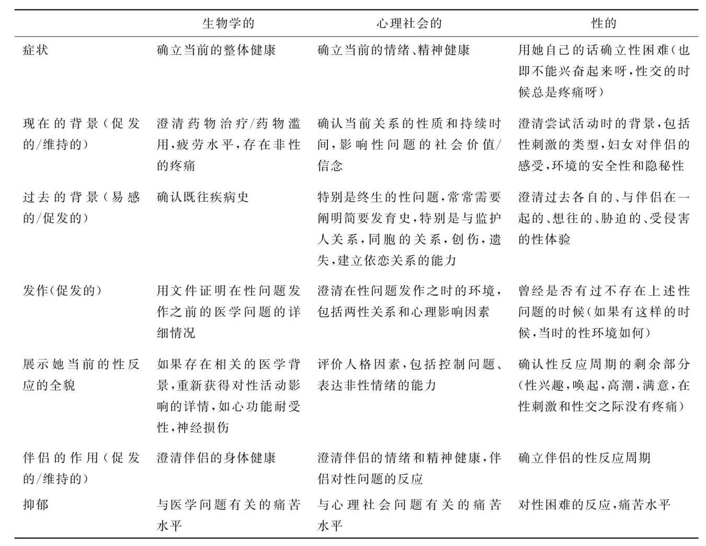

女性性欲低下（female hypoactive sexual desire disorder，HSDD）是指女性持续或反复缺乏性幻想和性活动的接受性，出现与其自身年龄不相符的性欲望和性兴趣淡漠，从而导致精神忧虑。当性表达机会遭到剥夺时也没有挫折感，没有寻求刺激和减少挫折的动机。个体通常不会主动发起性活动，只是在伴侣的发动之下不情愿地参与性活动。性欲低下并不排除女性在被动接受性活动时达到性唤起和获得性快感的可能性。
性欲低下可以是独立的性问题，也可以继发于其他性问题。由于缺乏有关性欲频率或程度的与年龄或性别相关的正常值资料，性欲低下的判断应由医生根据其年龄、人格特征、人际关系的决定因素、生活背景、文化环境等因素作出。
女性在性活动中绝大多数处于被动地位，且多数女性羞于谈及性生活、性欲话题。为维护家庭、感情，多数性欲低下的女性通常“牺牲自己”来取悦、满足男性。女性性欲低下的后果及对双方的危害远低于男性性欲低下，多数婚姻能在女性性欲低下中得以维持。被动性生活（passive sexual life）即为满足男方要求或维护女性自身尊严，非享受性乐趣而被动进行的性生活；主动性生活（initiative sexual life）即为满足女性自身要求和享受性乐趣而主动进行的性生活。
据20世纪70年代英、美、丹麦等国家的统计显示，性欲抑制的疾患可占性治疗患者的37%～46%，他们同期所进行的社区调查表明将近34%的女性和16%的男性有性欲低下。2007年调查欧洲女性性欲低下的发生率为6%～13%，美国女性为12%～19%。
人类性行为是一个生物、心理和社会因素相互联系的整体，女性正常的性活动依赖于体内正常的性欲中枢、正常的性激素水平、良好的血管反应、和谐的夫妻关系及正常的性观念。性欲低下的原因非常复杂，是多种因素共同造成的。目前认为其病因可分为功能性和器质性两大类，以功能性性欲低下较为常见。
性欲低下以心因性为主，社会心理因素是导致性欲低下的最主要原因，它包括许多方面的因素：①错误的性信念和性信息。②心理障碍，失恋、婚前过多性交往等带来的性挫折、心理创伤；自身心理冲突如对性能力的过分焦虑、对不能满足伴侣性要求的内疚感等；潜在的性偏好障碍、人格障碍、性取向冲突等也会影响性欲的正常表达。③婚姻冲突。夫妻之间性需求、性感受的交流不够，把非性问题的冲突带进性生活中。性欲低下与成年后的性虐待具有相关性（Laumann，1999）。④性技巧贫乏，缺乏新鲜感的性生活方式，使性生活成了索然无味的例行公事，缺乏激情，缺乏动力，缺乏乐趣，最终导致性欲低下。⑤生活方式，紧张而充满压力的工作环境，家庭居住条件太差，缺乏隐蔽和安全的条件，夫妻工作时间冲突，两地分居。⑥年龄因素，取决于两性的性观念、身体状况、过去的性经历、社会文化影响等因素。随着年龄的增加，性欲低下的发生率也随之增加（Richard D，2007）。
对于所有的性功能障碍患者而言，都强烈推荐全面地了解医学和心理社会历史（表6-1）。包括对抑郁的筛选，不论是否使用抗抑郁剂，抑郁总是与性功能障碍相关的，特别是与性欲低下相关。如果妇女透露曾有过性虐待的经历，建议对她做进一步的评估。包括评估妇女从性虐待的康复（过去是否接受过治疗），确定任何重症抑郁症，药物依赖障碍，严重焦虑，自残或滥交的历史；完全不能相信他人，特别是那些同性别的同案犯；或对控制他人或对取悦他人（不能说不）的过度需求。当注意到遗留着与性虐待相关的症状时，对性功能障碍的评估就要暂时推迟。
表6-1 一个综合的、性的、医学的、心理社会的、历史的组成成分
心、脑血管疾病，呼吸系统疾病，神经精神疾病，性传播疾病，内分泌疾病，妇科疾病等均可导致性欲低下；营养过剩、过度肥胖等也可导致性欲低下；糖尿病、高血压可能与微循环和神经血管的变化相关。
下丘脑、垂体、卵巢功能障碍导致内分泌失调可以造成性腺功能低下或完全无性欲。
降低性欲的药物有：①抗雄激素药物，如醋酸甲羟孕酮、醋酸环丙酮；②抗精神病药物；③镇静安眠类药物，如苯二氮 类、巴比妥类；④抗高血压药物，如利尿剂螺内酯；⑤双重作用的药物，如乙醇、苯二氮 类、巴比妥类、可卡因、苯丙胺等，低剂量有提高性欲的作用，高剂量或长期使用可降低性欲；⑥皮质醇药物及扰乱体内性激素的药物，如促肾上腺皮质激素（ACTH）和皮质醇，孕激素等；⑦其他：如尼古丁、氟他胺、亮氨酰脯氨酸醋酸盐、甲氰咪胍、化疗药物等。
主要表现为持续或反复地对性不感兴趣，缺乏性幻想，参与性活动的主观愿望和意识缺失以及主动性行为的要求减少，由于患者或双方对性活动的频率不满可导致夫妻关系紧张。
功能性性欲低下可伴有心理障碍；器质性性欲低下可伴随相应的器质性病变症状，如全身慢性疾病、生殖器官疾病、性传播疾病、内分泌疾病等。境遇性性欲低下只发生在特定的对象或特定的环境，如在某种环境下性生活很正常，而在另一环境下没有兴趣；完全性性欲低下是在任何环境下长期或持续存在的性欲减退。
诊断性欲低下必须对患者日常生活中与性功能有关的各种因素进行综合分析，如年龄、身体状况、爱好等。对于女性性欲低下的诊断至今尚无统一标准，有人提出可以用女性参加性活动的频率来评价女性性欲低下，但这种机械的数字诊断方法并不恰当。因为它忽视了女性屈从于配偶的某种压力而被动接受性活动这一因素。
包括姓名、年龄、受教育程度、职业、患者和配偶与性相关的情况、性历史、月经生育史及接受过的治疗、婚姻关系、彼此感情、精神病史及其他全身性疾病情况，注意有无使用影响性功能的药物。
用女性性功能积分表对性功能进行评估，包括患者的性交次数、性欲强度、性高潮次数、阴蒂感觉及性交不适等问题，分数越高性功能状况越好。
国外有性治疗专家评价方法，其内容包括患者的形象、与性伴侣的相互关系、与性伴侣交流性需求的能力、性的态度、性反应和婚姻关系等。
主要是对性激素、甲状腺素，糖尿病的内分泌检查。
包括女性生殖道血流、阴道pH值、阴道顺应性及生殖道震动感应阈值等的检查。彩色超声测定阴蒂、阴唇、尿道、阴道和子宫血流流速（最大收缩期流速）和静脉池（舒张期末流速）。阴道pH值是阴道润滑的间接指标，可用数字式pH测量探头测量。阴道压力/流量变化可用顺应性测量仪测定。阴蒂和阴唇震动阈值可用标准的生物震感阈值测量器记录。
参见本章第三节男性性欲低下的诊断。
有明确的可导致性欲低下的躯体疾病、药物或其他不良嗜好等原因。常见的疾病有慢性疾病如糖尿病、心血管疾病、激素水平下降、生殖器官手术、损伤、炎症以及与性活动有关的神经系统疾病；常见的药物如抗高血压、抗精神病、镇静类药物及某些激素等；不良嗜好如酗酒、吸烟、吸毒等。
性欲低下的治疗应根据不同病因进行针对性治疗。若为心因性因素引起的，一方面要学会自我调节，也可多和亲友、同事交流，一方面应向精神科医生进行心理咨询。若为某些环境因素导致的，要积极改善性生活环境。倘若因其他疾病引起，应首先治疗原发疾病。因药物引起者，要征求专科医生意见，在允许的情况下更换其他药物或停药。
医生应全面掌握患者患病经历与病情特点，综合分析，准确判断性心理障碍的类型和程度，结合其生活背景、行为模式、病因及影响因素、个性特征，制订出有针对性的治疗法案，确定治疗时间和治疗进度，强调夫妻共同治疗。要消除背景因素，并指导患者观看动情材料，手淫训练，增加交流，积极参与性体验，通过协商形成一种夫妻双方都能接受和满意的性生活方式。具体方法有：
即对性欲低下的形成原因作深入的回顾和分析，向患者分析其不合理的信念及错误的思维方法，作出有针对性的疏导治疗。
夫妻感情是治疗成功的基础，只有先解决夫妻间的矛盾，使关系和谐，才可能使治疗成功。探索良好的夫妻性生活模式，强调共同的活动和培养共同的乐趣。婚姻治疗的目的就是要纠正双方错误的生活模式，建立良好的伴侣生活模式，帮助就诊夫妇消除婚姻及性生活中存在的心理障碍问题。
通过强调夫妇间自尊、亲昵关系、满意和乐趣的分享来获得良好的性状态和性感受。治疗成功的标志包括自我感觉良好、对方感觉良好、能共度美好时光。通过一起欣赏音乐、旅游、散步等重温昔日的美好时光，来增加性外的亲昵感受。
对于性知识缺乏的患者进行性知识教育，观摩男性及女性生殖器官解剖生理教材录像和有关治疗录像，学习性生活技巧，让患者模仿行事，注意性活动过程中的爱抚。丈夫要了解妻子的性敏感区，摸索出双方都满意的性爱方式。
训练的顺序是由非性敏感区到性敏感区，经过一段时间的训练，使患者对性行为紧张和焦虑的反应随自身的耐受力增强而明显减弱，甚至消失。治疗中要求配偶注意妻子的性冲动和情欲，注意语音或行为交流中的细节。当不存在阻碍性感集中体验的障碍时，配偶便可以在愉悦、相亲相爱和充满希望的气氛下进入下一阶段的训练。
该疗法通过对性高潮的体验来提高性欲，有助于建立起自信心和增强性欲。振荡器用于增强性快感，主要通过高频振荡促进性反应过程，适当使用可使女性达到性高潮，对因长期性高潮缺乏而导致的性欲低下有效。手淫疗法可达到类似的效果，但少部分人由此产生对手淫的依赖而回避夫妻性生活。
耻骨尾骨肌是类似阔韧带的肌肉，支撑着骨盆内器官及环绕阴道，经常进行耻骨尾骨肌锻炼有助于增强该肌的力量，增加性交时对阴茎的紧握作用，增强快感，从而提高性欲。
（1）雌激素
更年期雌激素替代治疗可增加阴蒂的敏感性和性欲，减轻性交疼痛，防止骨质疏松及降低心脏病的危险性。雌激素局部应用可以解除阴道干涩、灼热感以及尿频、尿急感。Kokcu等对25例绝经妇女分别用7-甲异炔诺酮及雌激素加醋酸甲孕酮进行治疗，发现其能改善绝经后症状群，特别是能有效地提高性欲及性活动。
（2）雄激素
将甲基睾酮与雌激素合用可以缓解绝经期妇女的性欲低下、性交痛和阴道干涩；而对绝经期前女性的性欲低下，甲基睾酮的治疗效果不明确。有报道称去氢表雄酮（DHEA）50mg～100mg/d或睾酮0.25～1.0mg/d对其有效。局部应用睾酮霜剂可以增加阴蒂的敏感性、阴道的润滑作用，可提高性欲和性唤起能力。
雄激素替代治疗可用于卵巢功能或（和）肾上腺功能不足，而对雌激素水平正常的患者只能作为辅助治疗。甲基睾酮可导致体重增加，阴蒂增大，面部毛发增多及高胆固醇血症等副作用。
丁胺苯丙酮（bupropion）具有加强多巴胺和抑制催乳素的作用，可增强性欲。氯哌三唑酮（trazodone）具有多种潜在的促进性行为的药理作用：能抑制5-羟色胺摄取、阻断α1受体，对节后β受体有脱敏作用，降低血中催乳素水平及多巴胺刺激作用。氟西汀（fluoxetine）为选择性5-羟色胺再摄取抑制剂，可改善性功能。以上药物对抑郁伴性功能障碍者有用。
左旋多巴为多巴胺的前体物质，通过血脑屏障进入中枢，经多巴脱梭酶作用转化成多巴胺而改善性功能。溴隐亭能降低催乳素，改善性功能。司来吉兰（Deprenyl，Selepiline）为单胺氧化酶选择性抑制剂，可增加多巴胺在脑内的活动及多巴胺神经的敏感性，副作用较少。
作为选择性V型磷酸二酯酶抑制剂，西地那非可以减少第二信使cGMP的降解，增强NO介导的阴蒂海绵体和阴道平滑肌的舒张作用。西地那非单用或与其他血管活性药物合用，均可有效治疗女性性唤起障碍。有关该药治疗女性性唤起障碍有效性和安全性评价的临床试验正在进行中。左旋精氨酸是NO合成的前体物质，在NO合成酶（NOS）的作用下分解为NO和左旋瓜氨酸。在大鼠试验中已证实左旋精氨酸可改善勃起功能，其在男性性功能障碍治疗上取得的初步结果也令人鼓舞，标准剂量是1500mg/d。该药对女性性功能障碍治疗的研究工作正在进行中。
前列腺素E1 最初为男性使用的一种0.01%凝胶制剂，尿道内使用，经尿道黏膜吸收。前列腺素E1 制成女性阴道用制剂，可用来提高女性性器官反应能力，该药已进入临床试验阶段。
酚妥拉明为非选择性α肾上腺素能受体阻滞剂，可引起阴蒂海绵体、血管平滑肌舒张。一项对绝经后女性的研究结果显示，酚妥拉明可以增加阴道血流，改善性唤起能力。
有报告用含银杏树叶的草药合剂治疗202例性欲低下的女性患者，其中131例服药后自述性欲、性交、性幻想及对性交的满意度等均显著提高。该药的双盲对照试验正在进行中。
苯丙胺、可卡因、致幻药、美散痛等短期内可提高性欲，但长期使用会导致性欲低下，一般不用作性欲低下的治疗。
由躯体疾病引起的性欲低下首先应积极治疗原发病。各种慢性疾病、内分泌疾病、妇科疾病等应积极控制。注意患者是否使用了影响性欲的药物，如果为此种原因所致的性欲低下，可在允许的情况下考虑停用。
有报道称阴蒂包皮环切术可增强快感，提高性欲，但也有人认为阴蒂包皮实际上是小阴唇的延续，切除后使性交过程中对阴蒂的牵拉刺激减弱。其真实效果尚需作进一步研究。
有不良嗜好，如吸烟、酗酒、吸毒等应戒除。